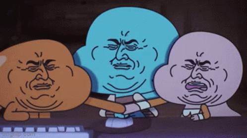
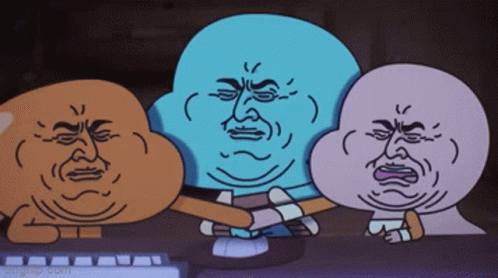
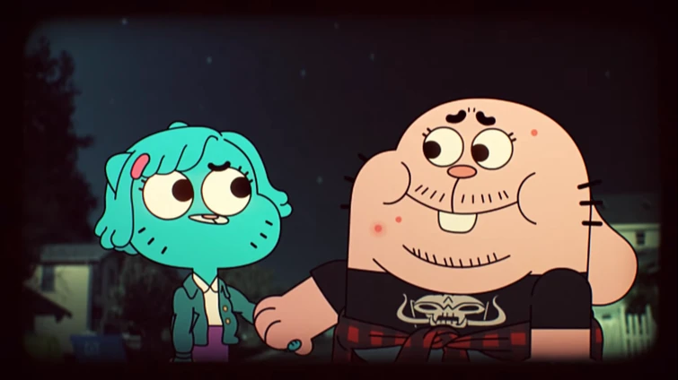
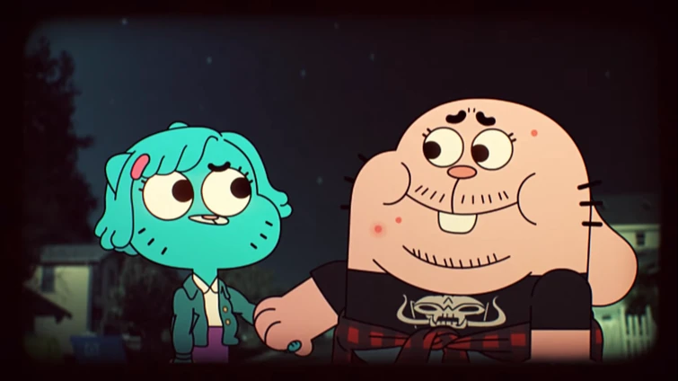
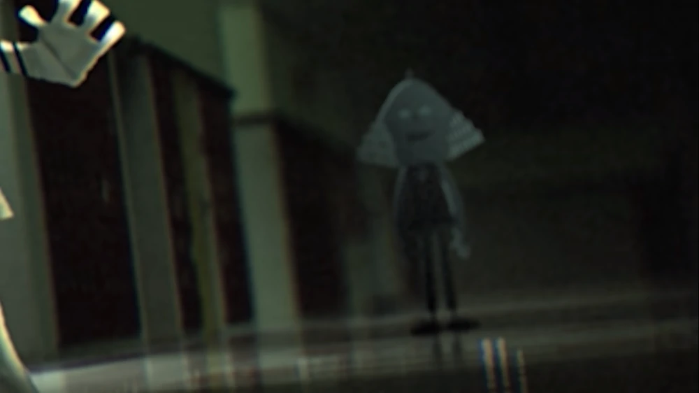
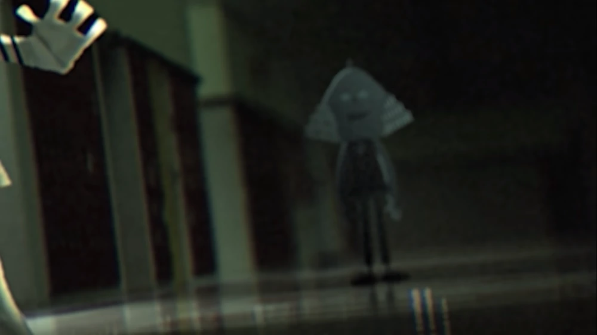
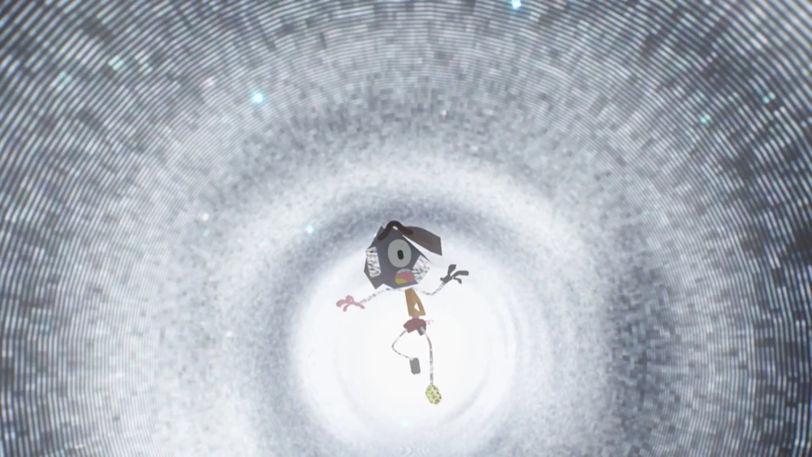
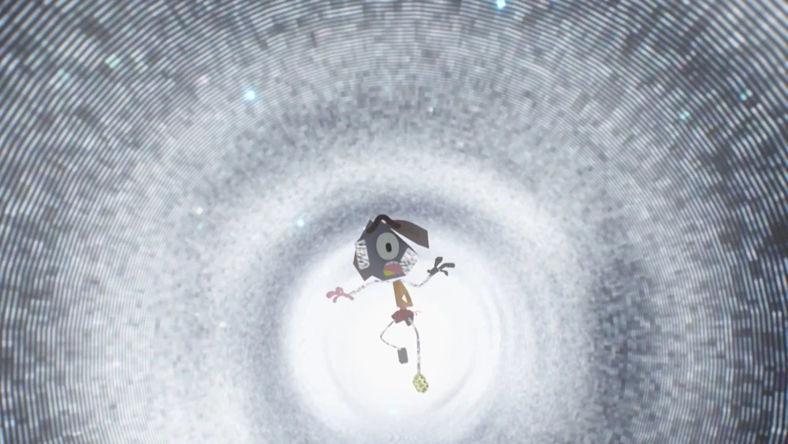

About
A brief summary of The Amazing World Of Gumball or TAWOG.
The Amazing World of Gumball, or TAWOG, was a cartoon aired on Cartoon Network from 2011 to 2019 about an anthropomorphic cat named Gumball and his adopted fish brother, Darwin. While most episodes revolve around the troublemakers, their dysfunctional family get their fair share of screen time. Their man-child father, Richard and their powerful mother, Nicole, and their cunning genius sister Anais often join in with the boys' buffoonery.

Gumball Watterson
Gumball Tristopher "Trisha" Watterson, born Zach Watterson is the main protagonist of the show. He is a mischievous blue cat who lives with his parents and has a girlfriend named Penny. Gumball was first portrayed as naive but well-intentioned. However, later in the show, he was portrayed as more serious, rational, and sardonic. Despite having moments of bad judgment, Gumball is a loyal, honest, good-natured person. He's protective of his loved ones but due to his large ego, he frequently overreacts.
Darwin Watterson
Darwin Raglan Caspian Ahab Poseidon Nicodemus Watterson III is the deuteragonist of The Amazing World of Gumball. Like Gumball, he was much more naive in the early seasons of the show but slowly became more sarcastic, although not as much as Gumball. He was originally Gumball's pet goldfish, but one day, he grew legs and adaplted to living on land, so he was adopted by the Watterson family. He's known for being kind and has a girlfriend named carrie.


Anais Watterson
The tritagonist and one of The Amazing World of Gumball's primary characters is Anais Errrrrrr Watterson. She's a pink four year old rabbit and the Watterson family's youngest member. Despite this, she's the most logical of her family. She attends Elmore Junior High with her elder brothers, Gumball and Darwin, and is in a higher grade than them, as is made clear in "The Others." She is known for her inability to make friends and is often shown with her plush toy, Daisy.
 

 


Nicole and Ricard Watterson
Doctor Nicole Meg Watterson is the tetartagonist of The Amazing World of Gumball. Nicole is a blue cat like Gumball and is the mom of the Watterson family. She is the most and maybe the only responsible one in the family. She is skilled in martial arts and is known for her quick temper. Richard Watterson is the secondary tetartagonist of The Amazing World of Gumball. He serves the role of the father in the Watterson family. He's irresponsible and a slob but he's shown to care for his family very much. Nicole and Richard met each other in unconventional ways, but they both seem to love each other unconditionally.
 

 
